这个夏天在讲什么
2013 年，日本一个正在退潮的渔村小镇「汐浦町」。高三的冈田悠人遇见转学生三浦栞—— 一个会把货架上掉下来的坏饭团买下来、永远说「没关系」的女孩。
他用一个夏天去靠近她。而她已经用这个夏天，把他往后的人生都安排好了。
本作全程没有一句台词解释她病得多重——你只会慢慢发现， 自己在镇上能选的时间，一格一格变少。
015 个结局
1 个真结局、2 个普通结局、2 个坏结局。走向由你在第五章末说出的那句话决定。
02潮汐即结构
每一章都标着一个潮位。序章潮汐表里那行「涨潮提前 1 小时 20 分」，一直埋到终章。
03会说话的立绘
标题画面右侧的立绘可以点——脸、胸、肚子、手臂，不同角色说不同的话。
04全中文剧本
剧本 1686 行、约 2.7 万字，五个结局各自写全。无语音。
画面
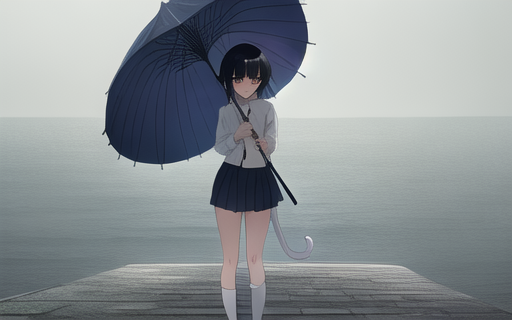
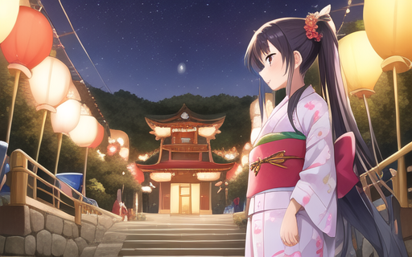
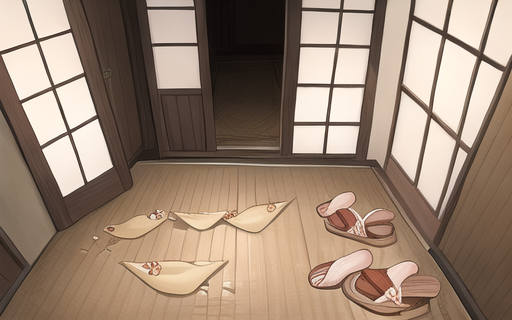
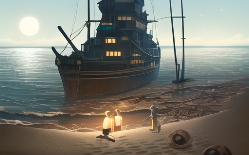
登场人物
十三个人，每个人身上都有一件说不出口的事。
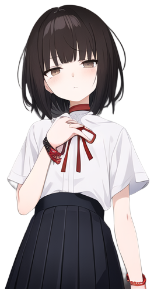
三浦 栞
女主。成绩年级第一，
永远说「没关系」。
永远说「没关系」。
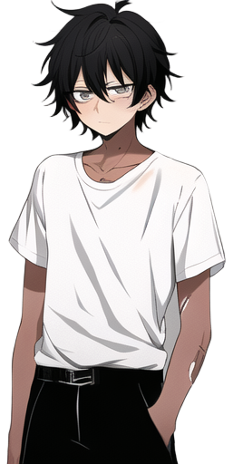
冈田 悠人
主角。18 岁。
把「没事」当盾牌。
把「没事」当盾牌。
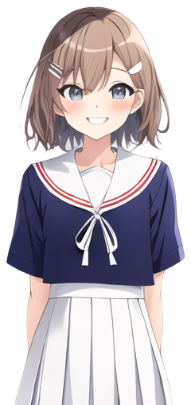
佐野 瞳
青梅竹马。
想走，却没走。
想走，却没走。
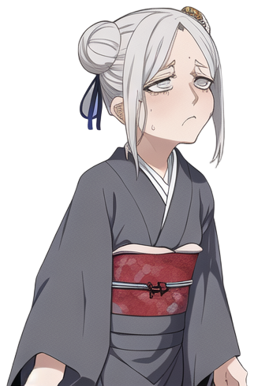
冈田 富美
78 岁。祖母。
认知症早期。
认知症早期。
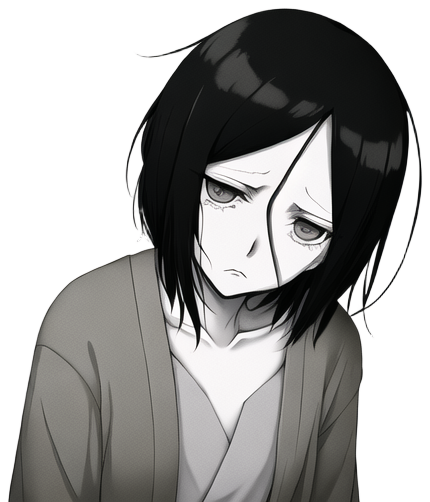
三浦 千鹤
45 岁。栞的母亲。
每周三次透析。
每周三次透析。
大贯 和夫
62 岁。町立诊所医生。
「这里只能看感冒。」
「这里只能看感冒。」
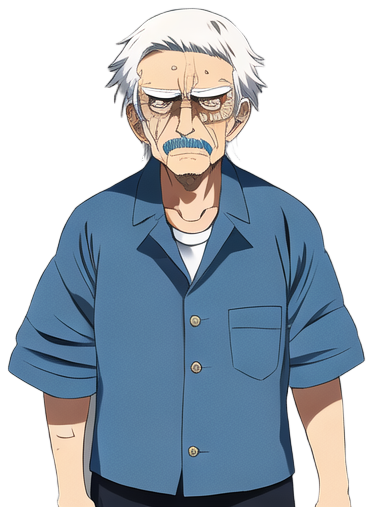
浜口 源治
71 岁。渔具店老板。
恨了三浦家三十年。
恨了三浦家三十年。
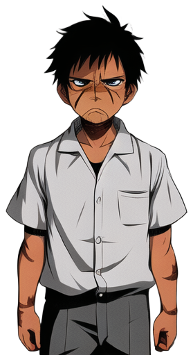
冈田 诚一
49 岁。父亲。
近海渔民。
近海渔民。
怎么装、怎么玩
手机版
ANDROID 6.0+ ｜ ARM64
- 点上面的「下载手机版」，得到一个
.apk文件。 - 点它安装。系统会提示「未知来源」，允许一次即可。
- 装好后从桌面图标启动，请横屏玩。
只支持 64 位 ARM 机型（近几年的手机基本都是）。如果是很老的 32 位机型，会装不上。
电脑版
WINDOWS 64 位
- 下载 ZIP，完整解压到一个文件夹。
- 双击里面的
残夏 -The Last Tide-.exe。 - 不需要安装 Godot 或任何运行库。
请保持
.exe 和 .pck 在同一个文件夹里——只拷 exe 出去会打不开。
ZIP 里还有一个 .console.exe，是看日志用的，可以不管。| 操作 | 键鼠 | 触屏 |
|---|---|---|
| 推进对话 | 点击 / Space / Enter | 点屏幕 |
| 打开回想 | Ctrl+R，或 HUD「回想」 | HUD「回想」 |
| 快速跳过 | Ctrl，或 HUD「跳过」 | HUD「跳过」 |
| 自动播放 | HUD「自动」 | HUD「自动」 |
| 打开菜单 | Esc，或 HUD「菜单」 | HUD「菜单」 |